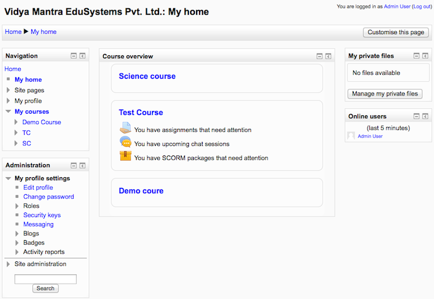
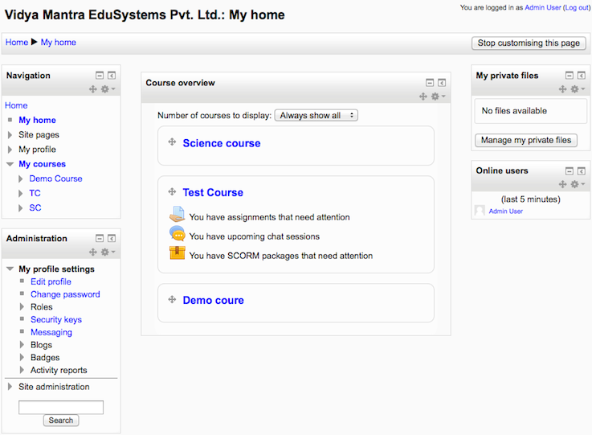

My home is a customisable “dashboard” page for providing users with links to their courses and activities within them, such as unread forum posts and upcoming assignments.
My home usually has the Course overview block in the central column. Users can customize their My home page and add and remove blocks by clicking the ‘Customise this page’ button.
My home
Customising My home
The navigation block includes a My home link directly above or below the Site home link. Once a regular user is logged in, the My courses link will also take them to their My home page.
An administrator can set My home as the default home page for all logged-in users by selecting ‘My home’ as default home page in Administration > Site administration > Appearance > Navigation.
If ‘User preference’ is selected as default home page, each user needs to navigate to either the ‘Home Page’ or the ‘My home’ page then via the Administration > My profile settings click the “Make this my default home page” link. Note that this option only appears on the page that is not their current default home page. Once selected, Moodle will remember which page to present them each time they log on.
Users with the Site administrator role cannot set My home as their default home page.
An administrator or manager (or other user with the capability moodle/my:configsyspages) can set which content (course overview, calendar, blocks) appears on the My home page for new users as follows:
- Access Administration > Site administration > Appearance > Default My home page.
- Select the required blocks from the “Add a block” drop-down menu. Configure each block as desired.
- Reposition blocks using the arrow icons in the block headers.
An administrator can add a new block to the My home page for all existing users (not only new users) as follows:
- Turn editing on for the front page
- Add the block to the front page
- Edit where the block appears and set the page contexts to ‘Display throughout the entire site’
- Go to your My home page and again edit where the block appears and set ‘Display on page types’ to ‘My home page’
By default, users can customize their My home page and add blocks. An admin can prevent this as follows:
- Go to Administration > Site administration > Users > Permissions > Define roles.
- Edit the authenticated user role and untick the Manage My home page blocks capability.
- Manage My home page blocks (see above)
- Configure system templates for My home pages
In addition, all blocks which may be added to a My home page have a myaddinstance capability (e.g. block/comments:myaddinstance) for controlling whether a user with a particular role can add the block.
By default, users can add many blocks to their My home page. An admin can prevent them from adding a particular block, such as the Online users block, as follows:
- Go to Administration > Site administration > Users > Permissions > Define roles.
- Edit the authenticated user role and untick the Add a new online users block to the My home page capability.
The following blocks may not be added to a user’s My home page (because it wouldn’t make sense):
- Course completion status block
- Course/site summary block
- Self completion block